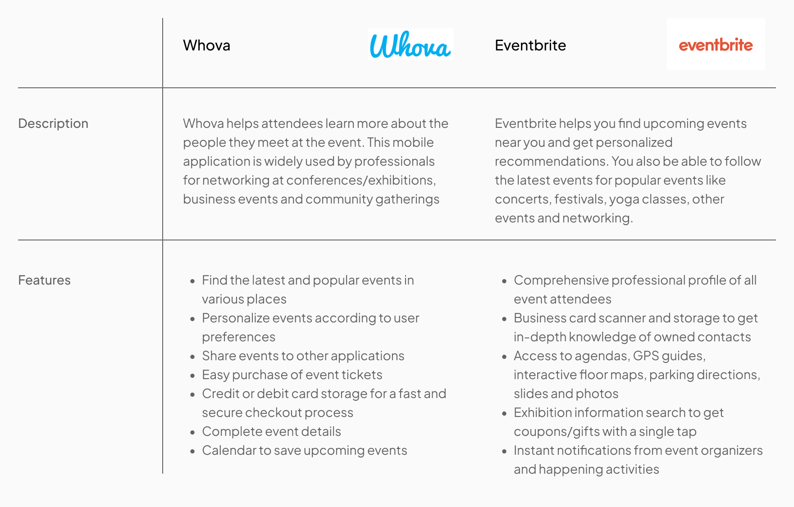
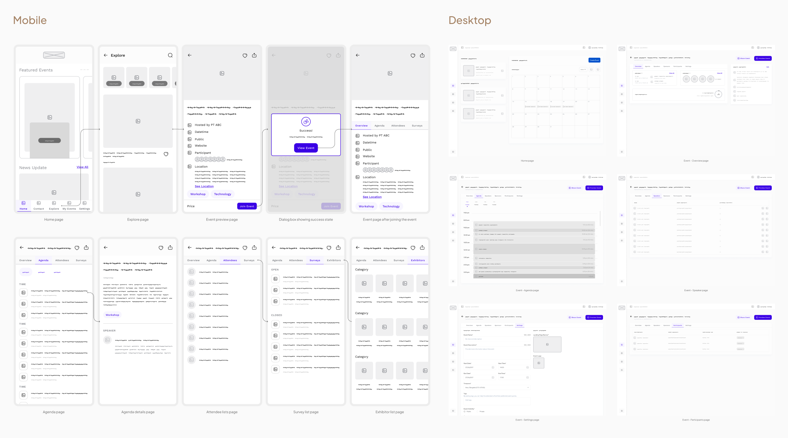
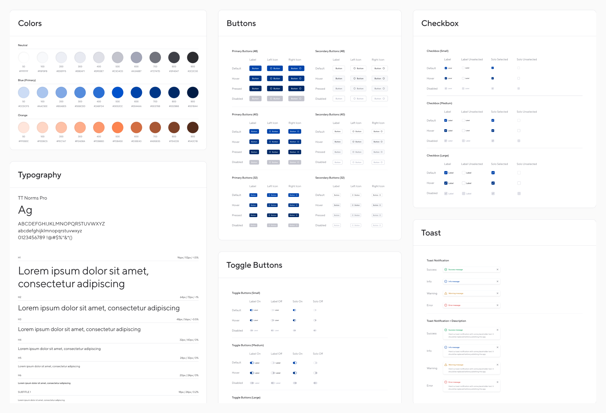
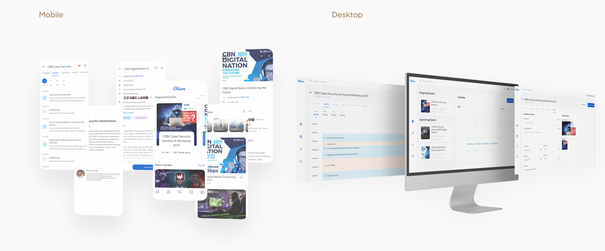

Otion
Experience, Connect, and Elevate with Otion: Your Gateway to Inspiring Events
Timeline
Jun 2017 - Jun 2018

Project Overview
The Product
Otion is an Android app that enables users to register for events hosted by PT. Cyberindo Aditama, including workshops, seminars, exhibitions, and competitions. The app offers a user-friendly interface for easy event browsing, selection, and registration, with timely updates and reminders. Otion is ideal for busy professionals, enthusiastic learners, or anyone seeking exciting activities to participate in. With its seamless functionality and diverse event options, Otion is a versatile app that caters to a wide range of interests and needs.
Backgrounds
PT. Cyberindo Aditama is dedicated to enhancing its products and strategies to drive company growth and adapt to evolving community needs while boosting productivity. As part of the CBN Education Program, the organization is extending its outreach to schools and universities across Indonesia through a standardized event planning system. This initiative includes a mobile app featuring event promotion and attendee surveys, fostering participant networking and supporting environmental sustainability through online form submissions.
Business Goals
Otion's core mission is to revolutionize the event experience, creating a dynamic platform that seamlessly connects event organizers and attendees. Through user-friendly technology and a vibrant community, Otion strives to simplify event discovery, promote meaningful connections, and enhance the efficiency of event management. The ultimate goal is to elevate both organizers' and attendees' experiences, fostering a memorable environment where ideas thrive.
My role and responsibilities
This is my internship project that involves requirement gathering, user flow, wireframes, visual mockups, prototypes, similar app analysis, a working mobile app and web admin completed in 1 year (2 sems).
Requirement Gathering
Study Industry Leaders
Conducting an in-depth study of industry leaders allowed us to gain valuable insights into best practices and trends, enhancing our competitive analysis within the case study.
Stakeholders Interview
Subsequently, I undertook stakeholder interviews to gain a deeper understanding of their expectations regarding the app. Here are the insights derived from the informative discussions.
Objectives
- Offer company brands growth opportunities
- Maximize user engagement and impact
- Break social media platform barriers
Technical Requirement
- Attendee data collection
- Actionable metrics
Persona
I developed a detailed user persona to encapsulate the typical app user's characteristics, behaviors, and needs, which helped us identify the pain points commonly encountered and inform our problem-solving approach.

Ideation
Feature list/MVP
Following the initial planning phase, I focused on crafting an MVP, or "Minimum Viable Product," due to the constrained timeline. Developing an MVP was crucial as it enabled me to focus on a select set of features, avoiding unnecessary work and streamlining efforts effectively.
Must Have
- Home/Feeds
- Event
- Contact
- Profile
- Organizer
- Sponsors
- Speaker
- Account settings
- User management
- Checked-in feature
Should Have
- Event file management
- Chat
Could Have
- Achievement/Milestones
- Seat reservations
- Online-based event
Won’t Have
- Event organizer service solution
Sitemap
The sitemap provided a visual representation of the app's structure and navigation, aiding in clear communication and project organization.
Wireframes
Design System
I developed a design system to instill consistency, structure, and effective communication across CBN Group's platforms. Opting for a simple, legible humanist typeface enhanced reading at various sizes. The mature yet modern color palette ensured strong contrast.
High-fidelity design
Key Takeaways
Impact
The app I developed is now directly used by our internal company staff for event management, streamlining their processes and enhancing efficiency.
What I learned
Taking on the end-to-end development process, from requirements gathering to design, testing, and development on my own, was a challenging task. However, it reinforced the importance of addressing fundamental needs thoroughly, as it significantly eases later stages of the project.